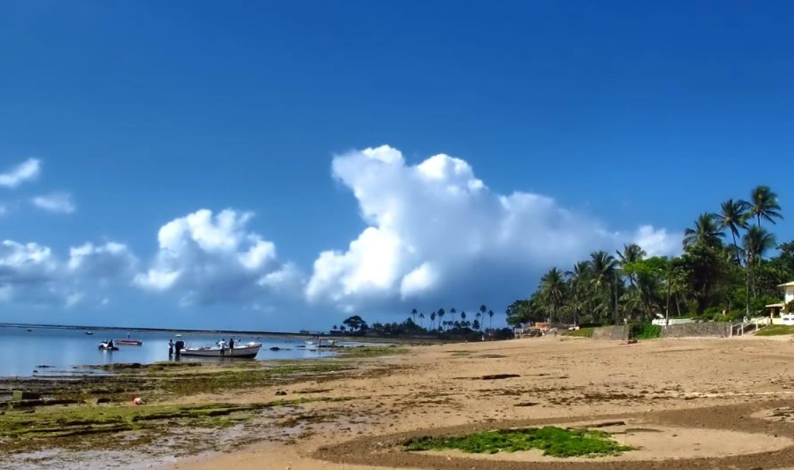

Vera Cruz · Ilha de Itaparica
Ilhota
Entre Mar Grande e Gamboa, a Ilhota guarda histórias ligadas às águas, à pesca, ao veraneio e a uma fonte que atravessa a memória local: o Tereré.
Um lugar entre caminhos conhecidos
Uma comunidade entre Mar Grande e Gamboa
A Ilhota aparece no mapa educativo do Conecta Vera Cruz na faixa leste da ilha, entre Mar Grande e Gamboa. Em estudo acadêmico que cita o PDDU de 2002, ela também aparece entre as vilas do município.
Na costa leste de Vera Cruz, em uma sequência de comunidades marcada pela relação com o mar.
A Fonte do Tereré é registrada como fonte de água potável ligada à comunidade.
A pesca artesanal integra a vida econômica e os saberes tradicionais da Ilhota.
Registros antigos ajudam a acompanhar mudanças no povoamento, no veraneio e no uso das águas.
Água que atravessa gerações
A Fonte do Tereré
O material didático História de Vera Cruz registra a Fonte do Tereré, na Ilhota, como uma fonte de água potável que ainda abastece a comunidade.
O recorte da revista antiga ajuda a enxergar outro capítulo dessa relação com a água. Ao descrever um período em que Mar Grande ainda não possuía água encanada, a reportagem informa que a água era transportada em barris no lombo de animais e vinha principalmente das fontes do Tereré e de São Jorge.
Uma fonte não guarda apenas água. Ela também guarda caminhos, trabalho cotidiano e lembranças de uma época em que buscar água fazia parte da rotina.
Pesca artesanal e território
Um estudo publicado na Revista da ABPN inclui a Ilhota entre as comunidades tradicionais pesqueiras de Vera Cruz e destaca a pesca artesanal como elemento importante da vida socioeconômica local.
Conhecimento das marés
O trabalho no mar depende de leitura do tempo, das águas, dos ciclos das espécies e de conhecimentos construídos na experiência.
Trabalho comunitário
A pesca artesanal conecta renda, alimentação, relações familiares e circulação de saberes dentro das comunidades costeiras.
Patrimônio vivo
Mais que atividade econômica, a pesca participa da identidade de comunidades que vivem em relação direta com o território marítimo.